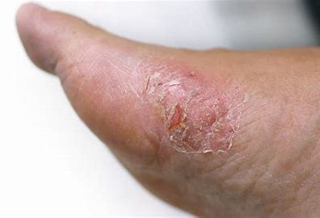

apa sih itu gula darah ?
Gula darah tinggi, atau hiperglikemia, adalah kondisi yang terjadi ketika kadar glukosa dalam darah melebihi batas normal. Ini bisa menjadi masalah serius jika tidak ditangani, karena dapat menyebabkan komplikasi kesehatan seperti diabetes tipe 2, kerusakan saraf, penyakit jantung, dan masalah ginjal. Meskipun pengobatan medis konvensional tetap menjadi pilihan utama, banyak orang mencari alternatif pengobatan herbal untuk membantu mengontrol kadar gula darah.
beberapa herbal yang dikenal efektif dalam membantu menurunkan gula darah.
- Kayu Manis (Cinnamomum verum)
- Fenugreek (Trigonella foenum-graecum)
- Pare (Momordica charantia)
- Ginseng (Panax ginseng)
Kayu manis telah lama dikenal dalam pengobatan tradisional sebagai bahan alami untuk menurunkan gula darah. Senyawa aktif dalam kayu manis, seperti cinnamaldehyde, memiliki sifat yang dapat meningkatkan sensitivitas insulin, yang berarti tubuh lebih efektif dalam memproses gula. Penelitian menunjukkan bahwa kayu manis dapat menurunkan kadar gula darah puasa dan meningkatkan profil lipid pada penderita diabetes tipe
Fenugreek adalah tanaman yang bijinya sering digunakan dalam masakan dan pengobatan tradisional. Biji fenugreek mengandung serat dan bahan kimia yang memperlambat pencernaan karbohidrat dan penyerapan gula dalam tubuh. Ini membantu mengurangi lonjakan gula darah setelah makan dan juga dapat meningkatkan fungsi insulin.
Pare, atau bitter melon, adalah tanaman yang populer di banyak negara Asia sebagai sayuran dan obat herbal. Pare mengandung senyawa yang bekerja mirip dengan insulin, yang membantu menurunkan kadar gula darah. Beberapa penelitian menunjukkan bahwa pare dapat membantu meningkatkan toleransi glukosa dan menurunkan kadar gula darah puasa.
Ginseng telah digunakan dalam pengobatan tradisional Tiongkok selama berabad-abad. Tanaman ini diyakini memiliki efek antidiabetik, terutama dalam meningkatkan sensitivitas insulin dan mengurangi kadar gula darah. Beberapa penelitian klinis telah menunjukkan bahwa ginseng dapat membantu menurunkan kadar gula darah setelah makan.